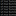

structurechecker
command-line
The following examples demonstrate how to check/fix structures in
various ChemAxon products via the relevant commands and action string
defined checker/fixer configurations. Find the valid structure
checker action strings online,
or type
structurechecker -hc
for checker action strings and
structurechecker -hf
for fixer action strings in your preferred command-line interface.
Remember the following tips in order to create a reliable Structure Checker configuration when using action strings.
"alias..radical..aromaticity"Comment:
"aromaticity:loose"Structure Checker searches only for loose aromatic systems.
"atomqueryproperty:R=true:a=true"Structure Checker searches only for "ring count" and "aromaticity" type atom query properties.
"atomqueryproperty:R=true:a=true..alias..aromaticity"Structure Checker searches only for ring count and aromaticity like atom query properties, finds atoms with alias information, and detects "general" aromatic systems (the option of aromaticity checker is "general" by default).
checkerActionString->fixerActionSting
. "abbrevgroup:contracted=true->expandgroup..alias->aliastogroup..staratom"In fix mode, Structure Checker searches for contracted abbreviated groups and expands them then finds any aliases and converts them to groups. Finally, Structure Checker searches for star atoms and applies fixer "convert to carbon atoms" as higher priority fixer. If fixer "convert to carbon atoms" has not solved the issue, the next fixer in line "remove atom" will be applied.
structurechecker
command-line
To run a structure check, define your command as follows:
structurechecker
command followed by the configuration as
xml
file or action strings and the structure to be checked.
structurechecker -c configuration.xml strchk_input.mrv -f mrv -o output.mrv -rpStructure(s) of strchk_input.mrv is checked according to the actions of configuration.xml. Output file is saved in
MRV format as output.mrv and checker result is written to
the propery fields of output file.
structurechecker -c "abbrevgroup:contracted=true..explicith:mapped=true:wedged=true" strchk_input.mrv -f mrv -o output.mrv -rpStructure Checker finds only contracted abbreviated groups and any explicit hydrogens, mapped, or wedged explicit hydrogens. Output file is saved in
MRV format as output.mrv and checker result is written to
the propery fields of output file.
structurechecker -c "abbrevgroup:contracted=true->expandgroup..explicith:mapped=true:wedged=true" strchk_input.mrv -m fixResult:
[2H]C1=CC(C[C@H](C)CC(O)=O)=CC=C1Structure Checker finds only contracted abbreviated groups and uses "expand group" fixer on them and finds any explicit hydrogens, mapped, or wedged explicit hydrogens and removes them.
The examples below demonstrate how to use structure checking in Chemical Terms Evaluator command line tool (evaluate).
There are three modes to select in evaluate: check, fix, or filter
structures via the
check()
,
fix()
, or
isValid()
commands, respectively. Please, pay attention to the usage of single (') and double (") quotation marks around commands and configuration.
evaluate -e "check('explicith:mapped=true:lonely=true:wedged=true..substructure:[CH3]')" "[H]C1=C([H])C(C)=CC(=C1)N(=O)=O" "[H]C1=CC(C)=CC=C1" "CC1=CC(=CC=C1)N(=O)=O" "N1C=CC=C1"
Result: failed, Explicit Hydrogen Checker: 2 explicit hydrogens found, Substructure Checker: 1 substructure found failed, Explicit Hydrogen Checker: 1 explicit hydrogen found, Substructure Checker: 1 substructure found failed, Substructure Checker: 1 substructure found passedComment on the result:
evaluate checks the
input structures considering the actions strings, and returns the
following report:
evaluate -e "fix('explicith:mapped=true:lonely=true:wedged=true..substructure:[CH3]>>[CH2]C')" "[H]C1=C([H])C(C)=CC(=C1)N(=O)=O" "[H]C1=CC(C)=CC=C1" "CC1=CC(=CC=C1)N(=O)=O" "N1C=CC=C1"
Result: CCC1=CC(=CC=C1)N(=O)=O CCC1=CC=CC=C1 CCC1=CC(=CC=C1)N(=O)=O N1C=CC=C1
evaluate returns the fixed structures based on the set fixer action
strings ("remove explicit hydrogen" and "transform"), or else the
original structure.evaluate -e "isValid('explicith:mapped=true:lonely=true:wedged=true..substructure:[CH3]>>[CH2]C')" "[H]C1=C([H])C(C)=CC(=C1)N(=O)=O" "[H]C1=CC(C)=CC=C1" "CC1=CC(=CC=C1)N(=O)=O" "N1C=CC=C1"
Result: false false false true
evaluate returns false or true.
The examples below demonstrate how to use structure checking in JChem Cartridge. Please, pay attention to the usage of single (') and double (") quotation marks around commands and configuration.
In general: select jc_evaluate_x('<input_structure>','chemTerms:check("aromaticity..valence..queryAtom..queryBond")') from dual;
select jc_evaluate('C[C](C)(C)(C)c1ccocc1', 'isValid("aromaticity..valence..queryAtom..queryBond")') from dual;
Returns 0 indicating that the structure is not valid, i.e., examined
molecule contains error(s) according to the configuration.
passed/failed) along with (in the
case of the structure is invalid) a short explanation why the
structure is invalid:
select jc_evaluate_x('C[C](C)(C)(C)c1ccocc1', 'chemTerms:check("aromaticity..valence..queryAtom..queryBond")') from dual
Returns: failed, Aromaticity Error Checker: 6 wrong aromatic bonds found, Valence Error Checker: 1 atom with valence problem found
select jc_evaluate_x('[H]C1=C([H])C([H])=C([3H])C([2H])=C1[1H]',
'chemTerms:fix("explicitH->removeExplicitH..valence->fixValence..bondAngle->clean..atomMap..abbrevGroup->contractGroup")')
from dual
Returns:
[1H]C1=C([2H])C([3H])=CC=C1As no further option of explicit hydrogen checker is set, fix mode removes only "simple" explicit hydrogens, isotopes are not removed. To remove isotopic hydrogen as well, select the
explicith:isotopic=true option.
select jc_evaluate_x('[H]C1=C([H])C([H])=C([3H])C([2H])=C1[1H]',
'chemTerms:fix("explicitH:isotopic=true->removeExplicitH..valence->fixValence..bondAngle->clean..atomMap..abbrevGroup->contractGroup")')
from dual
returns: C1=CC=CC=C1
| List of available checkers |
| Structure Checker GUI |
| Structure Checker in MarvinSketch |
 structurechecker Command Line Tool |
| Structure Checker Developer Guide |